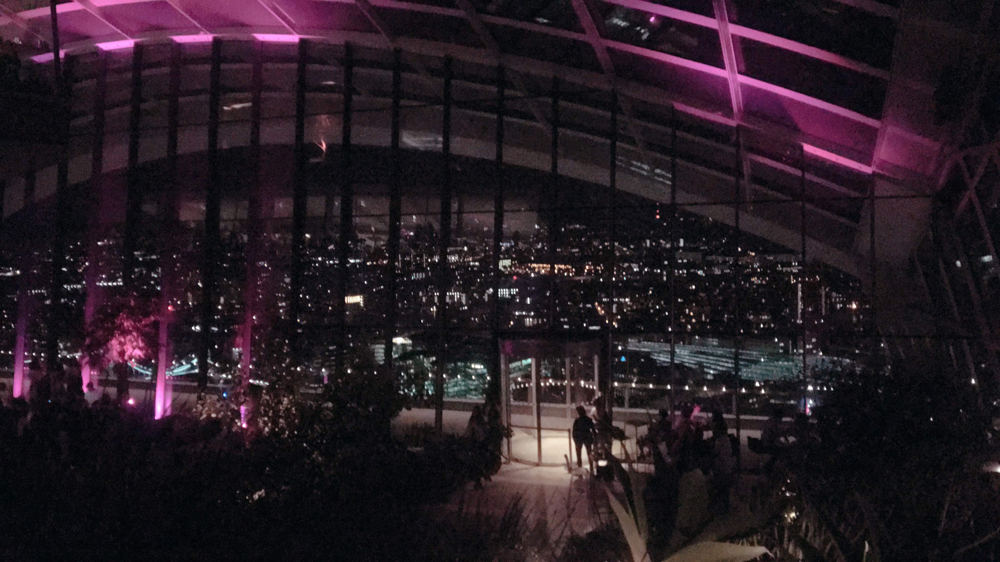
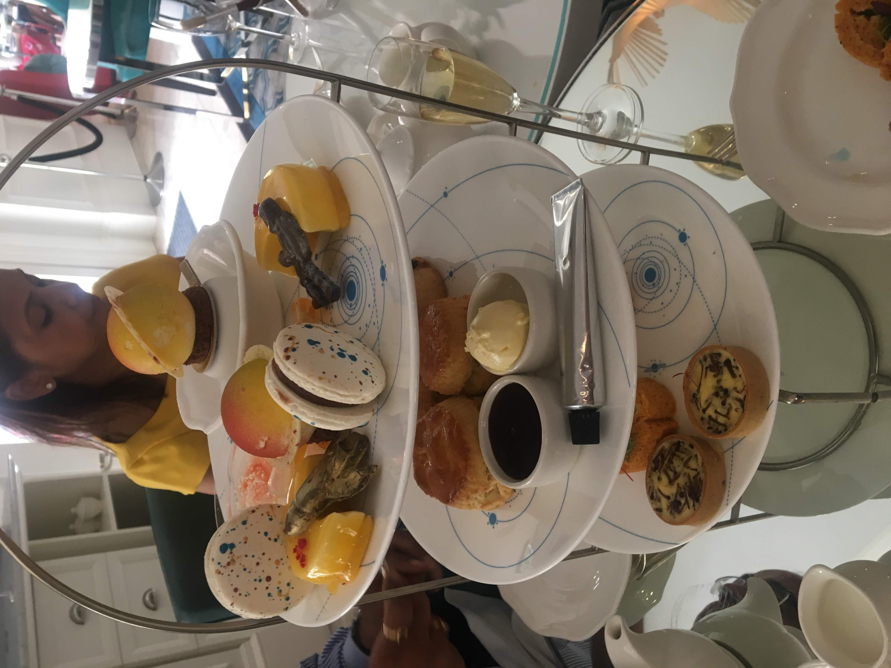
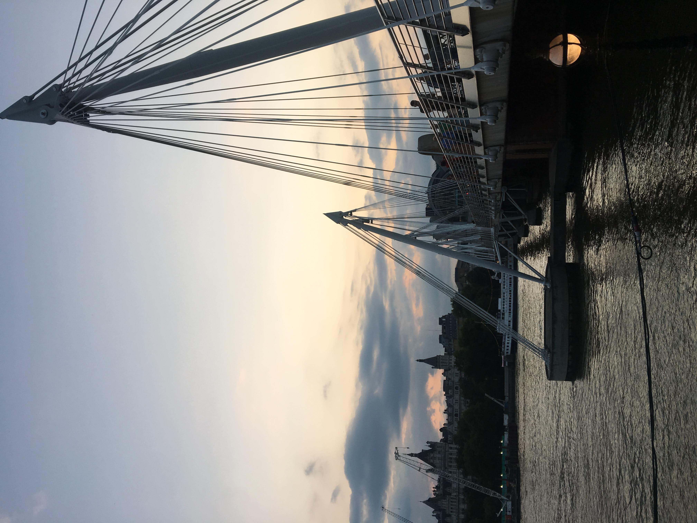

This is the view from St. Paul's Cathedral and is one of my favorites in London. The climb of 528 steps is definitely worth it.
Looking at this picture, you would probably think this is taken during the winter, but in fact it is in the middle of summer, guess London just always looks dreary.

This was my first time making it over to Sky Garden and it was absolutely breathtaking. You can walk
around the entire circumference and essentially see the whole of London.

You can't come to England and not experience an Afternoon Tea. They have many different ones and it is definitely worth it.
This was my second experience and we went to a Science themed one. It was all about the show!

This is what I saw on my last day in London and I just stood on the bridge, watching the sunset and looking over the River Thames at
my favorite sites in the city. While standing on this bridge, it made me realize
why I love London - it is a city that brings the world together.
 Back to England
Back to England